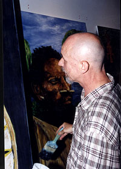

The
SMart Project for the Wellcome Trust Gallery
Paintings inspired by the collections
Room 24
This series of paintings by socially-excluded artists reflects some of
the themes of the Wellcome Trust Gallery, a new permanent display that
will open here in autumn 2003. It will explore the different ways in which
people create and ensure well-being and safeguard their passage through
life. The display has been produced in partnership with the SMart Network,
which is dedicated to changing the lives of socially excluded people.
It promotes works of art by socially excluded artists in order to provide
them with a route back to mainstream life, and to offer them the support
and opportunities necessary for them to regain their independence and
self-esteem.
The artists:
William Denison Ian Hughes
Anthony Anderson
David Walsh
Peter Swann
Stuart Jackson
Some of the artists have painted objects that will be in the new gallery
or that are already in galleries nearby. The paintings of Ian Hughes are
inspired by a Japanese kite, seen sailing through fantastical landscapes.
Peter Swan depicts a costumed shaman and a dramatic Sri Lankan snake mask.
The same snake mask appears in some of David Walsh's work, often set in
unusual contexts, and related to a variety of traditions of healing. Anthony
Anderson paints a magnificent Easter Island statue, as well as more Sri
Lankan masks, this time, in his own words, with 'an almost clown-like
appearance, wonderful bright colours and big eyes'. Others have based
their paintings on their own thoughts about health and well-being. Stuart
Jackson's series of five paintings are inspired by the importance of balance
to the achievement of well-being. At the centre of his work is a Native
North American mask, flanked by masked male and female figures and representations
of religious buildings. William Denison portrays a Papua New Guinean framed
by a beautiful landscape, while Walsh's 'The Archer' depicts a figure
in perfect harmony with his environment.
|  |
For further information
about SMart please contact Jaime Bautista, the founder of the SMart Network,
at:
SMart Network Diorama Arts Centre, Osnaburgh Street, London NW1 3ND
0207 209 0029 34, email: smartnetwork@lineone.net,
website: www.smart-network.org